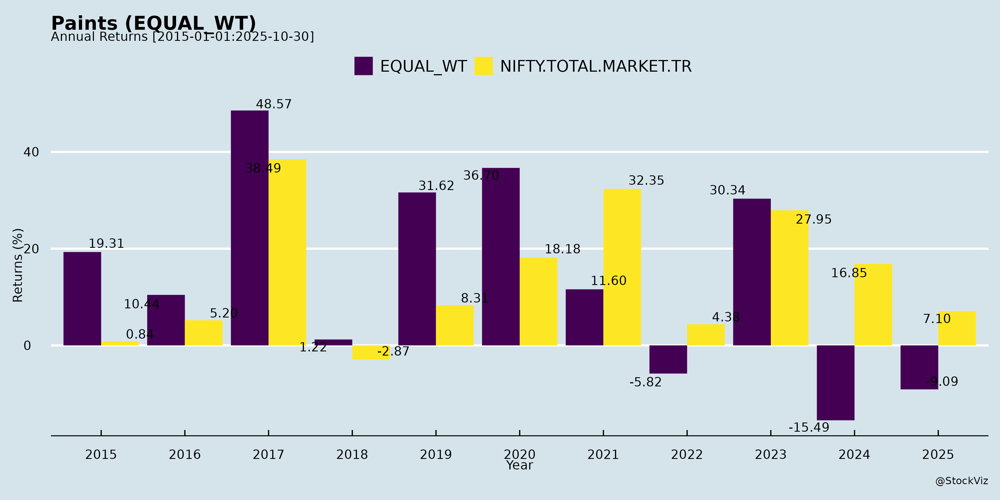
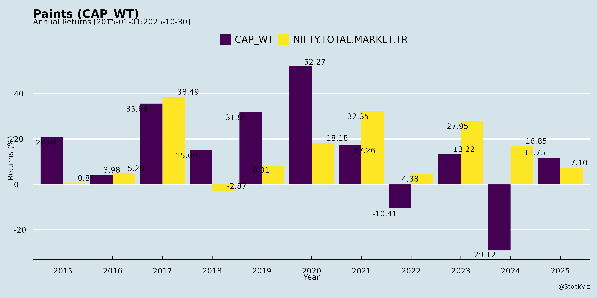
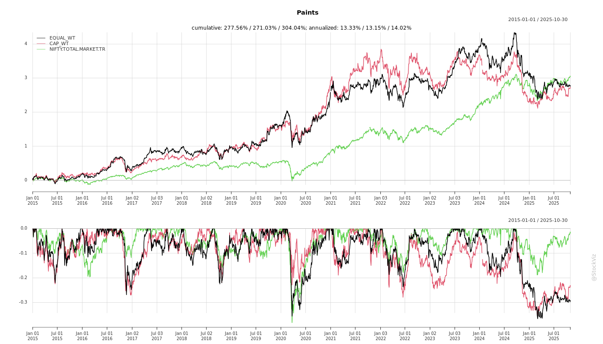
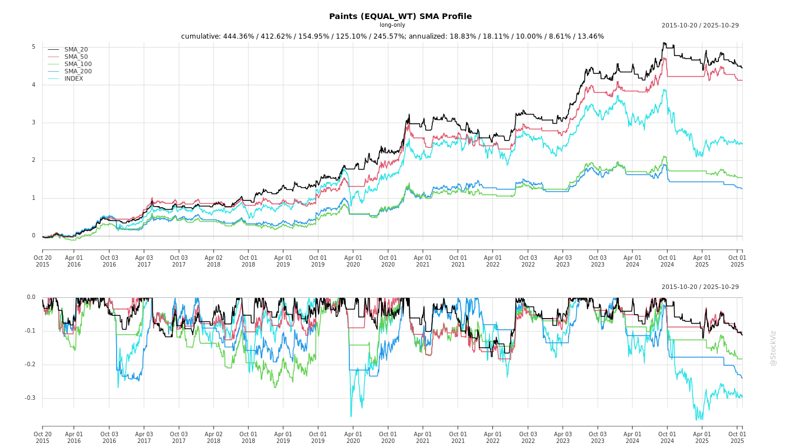
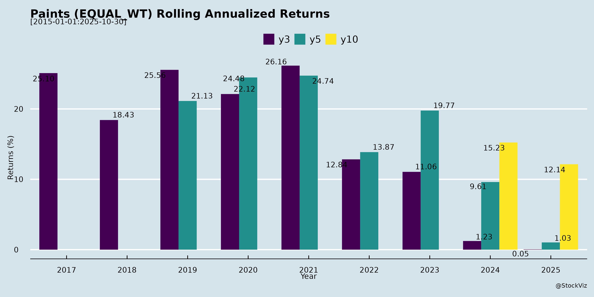
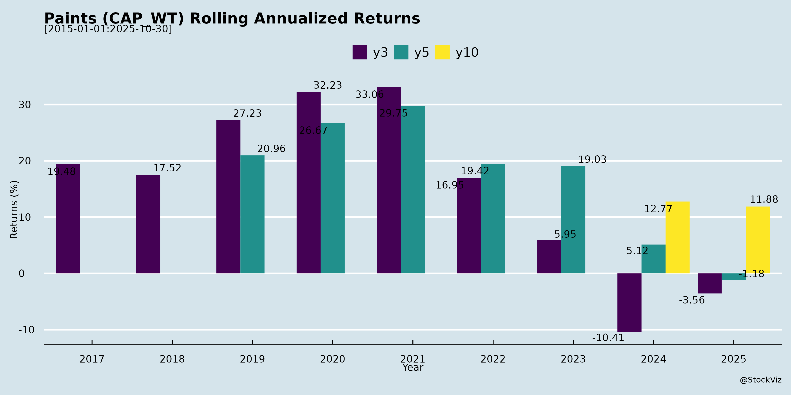

Paints
Industry Metrics
February 20, 2026
Annual Returns



Cumulative Returns and Drawdowns

SMA Scenarios

Current Distance from SMA
Rolling Returns


Market Cap
EBIT (% of Industry Total)
Revenue (% of Industry Total)
AI Summaries
Analyst
asof: 2025-11-30
Indian Paints Sector Analysis: Headwinds, Tailwinds, Growth Prospects, and Key Risks
The provided documents include regulatory filings, investor presentations, and earnings transcripts from major players like Asian Paints, Berger Paints, Kansai Nerolac, Akzo Nobel India, Indigo Paints, Sirca Paints (wood coatings focus), and Kamdhenu Ventures (paints division). These reveal a challenging FY26 Q2/H1 marked by weather disruptions and competition, but with optimism for H2 recovery driven by infrastructure, premiumization, and policy tailwinds. The sector (decorative ~80-85% share) faces near-term softness but projects 9-10% CAGR to 2030, fueled by urbanization and infra spend.
Headwinds (Key Challenges Observed)
- Extended Monsoon & Weather Disruptions: Prolonged/heavy rains (May-Oct 2025) delayed construction/repainting; impacted North/East most (Kansai Nerolac: urban better than rural; Akzo Nobel/Indigo: “incessant rainfall”; Kamdhenu: slowed activity).
- Intense Competition & Price Wars: New entrants (e.g., Birla Opus) caused discounting, down-trading to mass/economy products, dealer poaching (Kansai: “heavy competition”; Akzo: mass market decline; Kamdhenu: “turmoil… pressure on margins”; Indigo: “unprecedented trade discounts”).
- Shorter Festive Window: Early/extended Diwali (Oct 17) limited sales window (Kansai/Indigo: Oct challenging; Asian Paints: promoter meet post-Q2).
- Demand Slowdown: Weak volumes/values in decorative (Kansai: slightly negative; Berger/Kansai transcripts note flattish industry); election-year construction lag.
- Margin Pressures: Input costs (TiO2 anti-dumping stalled but volatile; rupee depreciation/crude); negative operating leverage (Akzo: 1.5% revenue dip despite volumes).
Tailwinds (Positive Drivers)
- Policy & Economic Boost: Infra push (₹11L Cr capex; GST reforms in autos); RBI rate cuts/income tax relief; good monsoon aiding rural spend (Indigo/Kansai: weddings, pent-up demand; Akzo: repainting cycle).
- Premiumization & Product Innovation: Double-digit premium growth (Kansai: Paint+ up 240bps; Akzo: Velvet Touch/Weathershield; Indigo: emulsions +7% value vs. 3.9% volume; Sirca: acrylic/waterborne).
- Industrial Resilience: Stable autos, strong infra/protective coatings (Kansai: lower single-digit; Akzo: order book “phenomenal”).
- Distribution Expansion: Dealer adds (Kansai: +2,500; Indigo: 18,900 dealers; Kamdhenu: 4,400); new formats/services (5% of Kansai decorative).
- Benign Inputs: Crude softening aiding gross margins (Indigo: +100bps to 45.1%; Sirca: 20.9% EBITDA).
Growth Prospects
- Near-Term Recovery (H2FY26): Double-digit volumes expected (Kansai/Indigo: Q4 strong; Akzo: “sharp improvement”; Kamdhenu: settle by FY26-end). Industry flattish Q2 but uptick in Oct-Nov (scanning/collections up 30-40% per Indigo).
- Medium-Term (FY26-30): 9-10% CAGR (Kamdhenu cites 9.4%); decorative via urbanization/rural (PMAY/Smart Cities); industrial via infra/railways/autos (Kansai: buoyant tractors/EVs).
- Company-Specific: | Company | FY26 Guidance/Outlook | |——————|—————————————| | Kansai Nerolac | 13-14% margins; Q4 better | | Akzo Nobel | 14-16% EBITDA; double-digit volumes | | Indigo | Double-digit top-line; premium focus | | Sirca | 35-40% CAGR; ₹1,000 Cr by FY30 | | Kamdhenu Paints | Premiumization; deeper dealers |
- Adjunct Segments: Waterproofing/construction chemicals booming (double-digit; Indigo: high single-digit contribution).
Key Risks
- Competition Intensifies: Margin erosion from discounting/new plants (e.g., Birla Opus East plant per Kansai); dealer churn (returning but volatile).
- Macro/External: Crude/rupee volatility (Kansai: geopolitical risks); prolonged rains/election impacts.
- Demand Execution: Rural/urban lag; repainting cycle delays (Akzo: 3-5 yr cycle).
- Operational: Capacity utilization (Indigo/Kamdhenu expansions); working capital stretch (trade receivables up).
- Sector-Specific: Down-trading persists; anti-dumping/TiO2 duties unresolved.
Overall Summary
| Aspect | Snapshot |
|---|---|
| Headwinds | Weather (monsoon), competition (price wars), weak festive demand (9-10% topline hits). |
| Tailwinds | Infra/policy push, premiumization, input relief (margins stable 13-21%). |
| Growth | H2FY26 recovery (double-digit); 9-10% CAGR to 2030; premium/industrial lead. |
| Risks | Margin squeeze, macro volatility, execution in expansion. |
Outlook: Sector troughing; H2 rebound likely (infra tailwinds > headwinds). Leaders (Asian/ Berger/Kansai) resilient via premiums/dealers; smaller players (Indigo/Sirca) agile on innovation. Investors: Favor premium-focused firms with strong networks.
Financial
asof: 2025-11-30
Indian Paints Sector Analysis (Q3 & 9M FY25 Insights from Key Players)
The Indian paints sector demonstrated resilient but uneven performance in Q3 FY25 (ended Dec 2024), based on unaudited results from major listed players: Berger Paints (market leader), Kansai Nerolac, Sirca Paints, Shalimar Paints, and Kamdhenu Ventures. Aggregate revenue growth was modest (~3-5% YoY for leaders like Berger/Kansai), driven by volume recovery post-monsoon and festive demand, but profitability was mixed due to cost pressures and one-offs. Smaller players (Sirca, Kamdhenu) showed sharper growth (20-30% YoY). Sector tailwinds from realty/infra upcycle are emerging, but headwinds persist. Below is a structured summary:
Tailwinds (Positive Drivers)
- Demand Recovery & Volume Growth: Berger (standalone rev +0.4% YoY to ₹2,585 Cr), Kansai (+1.5% to ₹1,842 Cr), Sirca (+22.6% to ₹887 Cr), Kamdhenu paints segment (+35% to ₹7,405 Lakh). Festive/rural demand aided Q3; 9M trends stable.
- Pricing Power & Margin Resilience: Berger’s EBITDA margins held ~25% (PBT +11% YoY Q3); Sirca’s op. profit margins expanded to ~18%. Core ops profitable despite costs.
- Strategic Gains & Diversification: Kansai’s ₹665 Cr land sale profit boosted Q3 PAT to ₹526 Cr (standalone); impairments managed. Dividend income (Berger: ₹52 Cr from Nepal sub) supported non-op income.
- Capex & Expansion: Notes highlight investments in branding, machinery (Kamdhenu, Sirca), dealer networks. Berger’s JV conversions signal inorganic growth.
Headwinds (Challenges)
- Cost Inflation: Raw material costs up 5-10% YoY (Berger materials ₹1,236 Cr Q3; Kansai ₹1,043 Cr). Employee/other expenses rose (Sirca +20%, Berger +10%).
- Subsidiary Weakness: Kansai impairments (₹186 Cr on Bangladesh/Lanka subs due to “economic/market changes”); forex/translation losses (Berger ₹10 Cr gain but volatile).
- Inventory Fluctuations: Positive changes hurt margins (Berger +₹78 Cr Q3 inventory build-up; Kansai +₹10 Cr).
- Loss-Making Players: Shalimar chronic losses (Q3 ₹24 Cr; 9M ₹71 Cr) amid low rev (₹148 Cr); high finance costs (₹5 Cr Q3).
- Modest Core Growth: Leaders flat YoY (Berger cons. rev +3%; Kansai flat ex-exceptionals), signaling urban slowdown.
Growth Prospects
- High (Medium-Term: 10-15% CAGR):
- Realty/Infra Boom: Housing demand (post-RERA), govt schemes (₹11 Lakh Cr infra budget FY25) to drive 8-10% vol. growth.
- Premiumization & Rural Penetration: Sirca/Kamdhenu (wood/wall coatings) grew 20-35%; Berger’s Nepal JV dividends signal exports.
- Market Share Gains: Leaders (Berger ~20% mkt share) expanding via capex (tinting machines, branding); Kamdhenu’s QIP funds for WC/capex.
- 9M Trends: Berger 9M PAT +0.8% (₹841 Cr); Sirca +6% PAT (₹3,495 Lakh). FY25E rev growth ~10% sector-wide (barring laggards).
- Catalysts: Urbanization (paints mkt ~₹60K Cr; 12-15% CAGR to ₹1 Lakh Cr by 2030), green coatings demand.
Key Risks
| Risk Category | Description | Impact (High/Med/Low) | Examples from Filings |
|---|---|---|---|
| Raw Material Volatility | Crude/chemical prices up 5-10%; 60-70% of costs. | High | Berger/Kansai material costs +7-10% YoY. |
| Geopolitical/Economic (Subs) | Bangladesh/Lanka turmoil; forex swings. | High | Kansai ₹187 Cr impairments; Berger Nepal exposure. |
| Competition | Intense (Asian Paints 55% share); price wars. | Medium-High | Flat core growth for Tier-1. |
| Realty Cycle Slowdown | 50% rev from housing; high inventory/rates. | Medium | Urban demand muted; Shalimar losses. |
| Regulatory/Execution | GST hikes, env. norms (VOC limits); capex delays. | Medium | Code on Social Security pending (Sirca/Berger notes). |
| Liquidity/Debt | High finance costs; working capital strain. | Medium | Shalimar ₹13 Cr 9M finance; Kamdhenu QIP utilization. |
| One-Offs/Impairments | Land sales mask ops; sub losses recur. | Medium | Kansai exceptionals dominate PAT. |
Overall Outlook: Positive with Caution. Sector FY25 growth ~8-12% (vs. 10% FY24), led by leaders (Berger PAT FY25E ₹1,600-1,700 Cr). Tailwinds from infra outweigh headwinds, but raw mat./geo risks cap upside. Smaller players (Sirca/Kamdhenu) offer higher growth (20%+). Monitor Q4 for vol. pickup; laggards like Shalimar remain drags. Investors favor premium leaders with sub stability.
Data sourced exclusively from provided filings; no external assumptions.
General
asof: 2025-11-30
Summary Analysis of Indian Paints Sector (Based on Provided Filings)
The provided documents primarily consist of regulatory announcements from key players (Asian Paints, Berger Paints, Kansai Nerolac, Akzo Nobel India, Indigo Paints, Sirca Paints, Shalimar Paints, Kamdhenu Ventures) as of Oct-Nov 2025. These highlight operational updates (e.g., RTA email changes), financial performance (Indigo’s Q2/H1 FY26 results), ESG ratings, acquisition-related covenants, fundraising, and promoter reclassifications. Indigo Paints offers the most substantive financial insights, showing modest growth amid seasonal weakness. Overall, the sector reflects stability with consolidation themes but subdued demand.
Tailwinds (Positive Factors)
- Margin Expansion via Premiumization: Indigo Paints reported gross margin improvement (standalone: 44.1% → 45.1% in Q2; 45.6% in H1), driven by premium products despite monsoon. EBITDA margins held steady at 15%+.
- ESG Momentum: Berger Paints received an NSE ESG score of 61/100 for FY24, signaling improving sustainability credentials, which could attract institutional investors.
- Routine Operational Efficiency: Multiple firms (Asian Paints, Kansai Nerolac) updated to a standardized RTA email (investor.helpdesk@in.mpms.mufg.com), streamlining investor services.
- Fundraising Success: Sirca Paints secured in-principle listing approval for 1.98M preferential shares (₹10 face, ₹369.50 premium), supporting growth initiatives.
Headwinds (Challenges)
- Subdued Demand & Seasonal Pressure: Indigo’s revenue growth was tepid (standalone H1: +1.9% YoY to ₹593 Cr; consolidated: +1.7% to ₹621 Cr), attributed to extended monsoons. Q2 volumes likely flat/negative in decorative paints.
- High Capex Burden: Indigo’s CWIP surged (consolidated: ₹13.6B → ₹22.1B), indicating aggressive expansion but straining cash flows (net cash from ops: ₹818 Cr, but investing outflow: ₹870 Cr).
- Administrative & Compliance Overheads: Frequent filings for RTA changes, physical share transfers (zero at Kamdhenu), and promoter reclassifications (Shalimar: 8 members with ~0% holdings seeking public status) divert management focus.
Growth Prospects
- Industry Consolidation: JSW Paints’ aggressive entry via Akzo Nobel India acquisition (SPA Jun 2025; debenture financing ₹3.3B via Axis Trustee) positions it as a new disruptor. Post-closing, JSW becomes promoter, unlocking synergies in coatings/distribution.
- Capacity & Portfolio Expansion: Indigo’s heavy capex (PPE up to ₹43B consolidated) and subsidiary growth (Apple Chemie: +23% Q2 revenue) signal volume ramp-up in H2FY26. Broader sector likely to benefit from urban/rural recovery and premium decoratives.
- Shareholder Value Unlocks: Preferential issuances (Sirca) and reclassifications (Shalimar) could improve liquidity/free float. Projected H2 rebound (post-monsoon) could drive 8-12% FY26 sector growth, per Indigo’s commentary.
Key Risks
- Acquisition-Related Restrictions (Akzo/JSW): Debenture covenants (effective post-closing) impose tight controls on Akzo: no dividends >50% profits, capex limits (₹50 Cr/year without consent), no M&A/debt >₹100 Cr, asset sales triggers mandatory redemptions. Breaches could trigger defaults, impacting control post-JSW takeover.
- Demand Volatility: Prolonged weak monsoons/urban slowdown could cap growth below 5-7% FY26; Indigo’s PAT margins (8.1-8.6%) vulnerable to raw material inflation.
- Regulatory & Governance: SEBI scrutiny on reclassifications (Shalimar), physical-to-demat transfers (Kamdhenu), and LODR disclosures (e.g., Reg 30A for Akzo). Non-compliance risks fines/delays.
- Execution Risks: High leverage/debt covenants (JSW), capex overruns (Indigo cash burn), and competitive intensity from JSW could pressure smaller players (Sirca, Shalimar).
Overall Outlook: Neutral-positive. Sector navigates headwinds with margin resilience and consolidation tailwinds. Indigo’s results benchmark modest H1 growth (2% revenue, 5% PAT), but JSW’s entry could catalyze M&A/competition. Monitor H2 demand and Akzo closing for upside; risks skewed to covenants and macros. Investors should watch Q3 results for recovery signals.
Investor
asof: 2025-11-30
Summary Analysis of Indian Paints Industry (Based on Q2/H1 FY26 Results and Transcripts)
The Indian paints sector (decorative ~75-80% of market; industrial ~20-25%) faced a challenging Q2 FY26 due to extended monsoons and competitive pressures, leading to flat-to-negative volume/value growth for most players (e.g., Kansai Nerolac: slightly negative decorative; Akzo Nobel: 1.5% revenue decline; Indigo: 3.5-4% revenue growth but muted volumes). However, premium segments showed resilience (e.g., Kansai: Paint+ up 240 bps; Akzo: mid-single digit premium growth). H1 revenue was flat/slightly down YoY for leaders, with margins stable at 6-7% EBITDA amid cost controls. Smaller players like Sirca (24% YoY revenue growth) and Kamdhenu (4% Q2 growth) outperformed via niche focus (wood coatings, regional strength). Overall industry growth is expected to rebound in H2 FY26 (double-digit volumes per Kansai, Indigo).
Headwinds (Challenges Observed)
- Demand Weakness: Prolonged/heavy monsoons (longest in history per Indigo) disrupted outdoor/decorative sales (70-80% of revenue); shorter Diwali window (Oct sales challenging per Kansai, Akzo); rural softness and down-trading to economy products (Kansai: value ~ volume, negative; Akzo: mass market decline).
- Intense Competition: Aggressive discounting/new entrants (e.g., price corrections by Akzo ~1.5-2%; high trade schemes); dealer churn/recovery (Kansai, Akzo noted dealers returning from competitors).
- Cost Pressures: Volatile inputs (crude range-bound but rupee depreciation; TiO2 anti-dumping stalled but paid under protest per Akzo/Kansai); higher A&P spends pre-festive (Kansai Q2 impact).
- Seasonal/Execution Issues: Negative operating leverage in Q3; subsidiaries/international weakness (Kansai: Bangladesh/Sri Lanka challenges; Akzo carve-outs).
- Macro: Geopolitical tensions, unseasonal rains hitting white goods/electricals (Kansai).
Tailwinds (Positive Factors)
- Premiumization & Mix Improvement: Strong premium growth (Kansai: emulsions/construction chemicals double-digit; Akzo: Velvet Touch/Weathershield; Indigo: emulsions value > volume); new launches (waterproofing, wood finishes up double-digit).
- Raw Material Relief: Benign crude/TiO2 (gross margins stable/up slightly, e.g., Indigo +100 bps to 45%; Sirca 20.9% EBITDA).
- Network Expansion: Dealer additions (Kansai: +2,500; Indigo: 18,900+ dealers/11,650 tinting machines; Kamdhenu: 4,400+ focus on Tier II/III).
- Industrial Resilience: Stable auto (GST push); infra/railways demand (Kansai, Akzo strong order books).
- Consumer Sentiment Boost: RBI rate cuts, tax/GST reductions, bumper weddings/harvest (Indigo, Kansai optimistic for Q4); scanning/token inflows up 30-40% (Indigo).
Growth Prospects
- Industry Outlook: H2 rebound to double-digit volumes (Kansai/Indigo guidance); repainting cycle (post-2022 COVID peak, due FY27 per Akzo); urbanization/infra (RBI: strong construction); furniture/MDF boom (Sirca: 35-40% CAGR to ₹1,000 Cr by FY30).
- Company-Specific: | Company | H1 FY26 Growth | FY26/H2 Guidance | |———|—————|——————| | Asian Paints | N/A (intimation only) | Promoter briefing; no UPSI. | | Berger | Transcript access | Q2/H1 results presented. | | Kansai Nerolac | +1.1% revenue | Q4 strong; 13-14% margins short-term, 15% long-term. | | Akzo Nobel | -1.5% revenue | Premium double-digit; EBITDA 14-16%. | | Indigo | +1.9% revenue | Double-digit Q4; construction chemicals high growth. | | Sirca | Strong (wood coatings) | 35-40% CAGR; Wembley integration. | | Kamdhenu | -2% H1 revenue | Premium focus; pan-India expansion.
- Sector TAM: Decorative ~₹1 lakh Cr (8-10% CAGR); industrial infra-led; wood coatings ₹9,500-10,000 Cr (Sirca niche).
Key Risks
- Demand Recovery Delay: Monsoon spillover/weather risks; weak rural/urban if sentiment doesn’t lift (pent-up demand key bet).
- Margin Erosion: Sustained discounting/competition (e.g., warranty wars per Akzo); input inflation (rupee, tariffs).
- Execution: Dealer retention amid churn; capacity utilization post-expansion (Kamdhenu, Indigo); South/West penetration.
- Macro/External: Geopolitics/supply chains; subsidiaries (Kansai intl.); regulatory (TiO2 duties).
- Company-Specific: Integration risks (Sirca Wembley); debt/working capital stretch (Kamdhenu receivables up).
Overall: Sector troughing; H2 inflection likely on premium/infra tailwinds, but competition caps margins (6-8% EBITDA norm). Leaders (Asian/ Berger/Kansai) resilient; niche players (Sirca/Kamdhenu) high-beta growth. Watch Q3 for confirmation.
Meeting
asof: 2025-12-02
Summary Analysis of Indian Paints Sector (Based on Q1/H1 FY26 Results from Key Players: Asian Paints, Berger, Kansai Nerolac, Sirca, Kamdhenu, etc.)
The Indian paints sector showed muted topline growth in Q1/H1 FY26 (Apr-Sep 2025), with revenue largely flat/declining YoY for leaders like Asian Paints (-0.2% consolidated Q1), Berger (+1.6% H1 standalone but Q2 flat), and Kansai Nerolac (+1.1% H1 standalone). Sirca bucked the trend with ~33% H1 revenue growth. EBITDA margins contracted (e.g., Asian Paints 19.4% down 70bps; Berger down 6.5% H1) due to investments and weak demand. PAT declined 5-16% YoY across majors. Below is a structured analysis of headwinds, tailwinds, growth prospects, and key risks.
Headwinds (Challenges Constraining Near-Term Performance)
- Weak Decorative Demand (60-70% of Industry Revenue): Extended/early monsoons, macro uncertainties (inflation, rural slowdown), and low urban consumption led to volume/revenue de-growth or flat performance. E.g., Asian Paints decorative revenue -1.2% despite +3.9% volumes (mix shift); Berger/ Kansai cited similar issues. Home décor segments (bath/kitchen) saw 2-32% declines.
- Margin Pressures: EBITDA margins down 50-190bps YoY due to higher sales/marketing spends, adverse product mix (low exterior sales), negative scale effects, and benign but volatile raw material costs. E.g., Berger EBITDA -18.9% Q2; Asian Paints PBDIT margin -70bps.
- Subdued Retail/Consumer Spend: Household disposable income pressure; shorter festive season (Diwali) expected to persist into Q3.
Tailwinds (Positive Factors Supporting Resilience)
- Selective Segment Strength: Industrial coatings grew 4-11% (e.g., Asian Paints +8.8%; Berger automotive mid-single digit). International business up 8-11% (Asian Paints +8.4%, 17.5% CC). Waterproofing, wood coatings, construction chemicals showed healthy growth.
- Volume Resilience in Core Decorative: Leaders like Asian Paints maintained +3.9% volumes; Berger high single-digit volumes despite revenue flatness, gaining market share.
- Operational Efficiency & Investments: Margin support from benign RM prices; capex in capacity (e.g., Asian Paints polymers infusion). Sirca/Kamdhenu showed robust PAT growth (Sirca PAT doubled H1).
Growth Prospects (Medium-to-Long Term Outlook)
- Industry Tailwinds: Domestic market ~₹77,500 Cr (FY25 est.); 8-10% CAGR potential from infrastructure (GST cut benefits auto/OEMs), real estate, urbanization. Berger/Asian Paints expect demand recovery post-monsoon.
- Premiumization & Diversification: Shift to high-margin products (performance/protective coatings); home décor expansion (e.g., Asian Paints stores). International (Middle East/South Asia) growing 10-20% CC.
- Market Share Gains: Leaders like Asian Paints/Berger report gaining share; smaller players (Sirca) scaling via network/innovation. Capacity expansions (e.g., Asian Paints VAM/VAE) position for 10-12% sector growth.
- FY26 Guidance: Gradual recovery expected; festive/infra push to aid Q3/Q4. Long-term: 10%+ CAGR, driven by 7-8% GDP growth.
Key Risks
- Weather/Macro Sensitivity: Monsoon variability, geopolitical tensions, forex volatility (RM imports ~50-60% costs).
- Competitive Intensity: Price wars, new entrants eroding margins; raw material inflation (crude-linked).
- Execution Risks: High capex/debt (e.g., Sirca borrowings up); working capital strain from receivables/inventories (up 20-30% YoY in some).
- Regulatory/External: GST changes, elections, global slowdown impacting infra/auto; contingent liabilities (e.g., guarantees like Kamdhenu Rs.42.5 Cr).
- Company-Specific: Transition risks (Akzo Nobel stake sale); fire/incident losses (Berger Rs.37 Cr exceptional item).
Overall Sector Outlook: Near-term cautious (flat FY26 growth, margin recovery key); long-term bullish (double-digit potential). Leaders resilient via diversification; monitor Q3 festive demand for inflection.
Press Release
asof: 2025-11-30
Indian Paints Sector Analysis: Headwinds, Tailwinds, Growth Prospects, and Key Risks
Using the provided filings from key players—Asian Paints (JV renewal), Kansai Nerolac (Q2 FY26 results), Akzo Nobel India (FY25 results), Sirca Paints (Q2 FY26 results), and Kamdhenu Paints (depot expansion)—here’s a synthesized analysis of the Indian paints sector (estimated at ~₹77,500 Cr as of Mar 2025 per Kansai). The sector shows resilience amid challenges, with decorative paints facing near-term pressure but industrial/B2B segments driving growth.
Headwinds (Short-term Challenges)
- Weather and Seasonal Disruptions: Extended monsoons and shorter Diwali season impacted decorative demand and project execution (Kansai: decorative weakness; Sirca: temporary retail slowdown). Q2 revenue growth muted (Kansai: +0.4% QoQ, +1.1% YoY H1).
- Competitive Intensity: Mass/economy segments hit by pricing pressures (Akzo: urban premium growth but mass weakness).
- Cost/External Volatility: Benign raw material prices but forex volatility and geopolitical uncertainty (Kansai). EBITDA de-growth despite revenue gains (Kansai: -1.5% QoQ, -4.7% YoY H1).
- Demand Softness in Retail: Urban/rural decorative slowdown due to monsoons/early festivals (Sirca, Kansai).
Tailwinds (Positive Momentum)
- B2B/Industrial Strength: Automotive (+ growth sustained), performance/protective coatings booming (Kansai: good order flows; Asian Paints: 15-yr JV extension to 2041 for industrial/marine/packaging/auto/powder). Akzo: double-digit B2B growth.
- Premiumization & Product Innovation: Shift to high-margin acrylic/waterborne/metallic finishes (Sirca: +24% revenue, +44% EBITDA on premium mix; Akzo: new launches like Wanda Easy RM, Low-E powder coatings).
- Infra/Govt Boost: GST cuts for autos/OEMs, infra push aiding industrial demand (Kansai). Furniture exports/manufacturing growth (Sirca).
- Operational Efficiencies: Facility integrations/expansions (Sirca: Wembley consolidation by Q4 FY26; Kamdhenu: new Delhi depot + showroom). Sustained profitability (Akzo: 13.5% EBIT margin; Sirca: EBITDA 20.9%).
- Partnership Extensions: Long-term tech/know-how access (Asian Paints-PPG; Sirca-Sirca Italy to 2041).
Growth Prospects (Medium-to-Long Term)
- Segment Shift: Industrial/performance coatings to outpace decorative (Asian Paints JV; Kansai: automotive/performance momentum). Overall industry growth from infra/auto/real estate (Kansai outlook).
- Capacity & Distribution Expansion: New facilities/showrooms/depots (Kamdhenu Delhi NCR; Sirca integration). Dealer networks scaling (Kamdhenu: 4,400+ dealers, 30+ depots).
- Sustainability/Innovation: Low-VOC/water-based products, R&D focus (Sirca acrylic/UV; Akzo Aquaprime; Kamdhenu eco-paints). Premium urban/furniture demand (Sirca: new Wembley ‘Valentino’ range).
- Export/Outsourcing: Furniture sector tailwinds (Sirca). Akzo divestitures (powder/research sale: ₹2,143 Cr expected by Dec 2025) to unlock value.
- Financial Health: Strong balance sheets, dividends (Akzo: ₹100/share total FY25; Sirca: EPS +34% YoY). H1 FY26 revenue up across most (Sirca +; Kansai flat).
| Key Metrics (Select Cos, ₹ Cr) | Q2/H1 FY26 Revenue | YoY Growth | EBITDA Margin |
|---|---|---|---|
| Kansai Nerolac (Standalone) | 1,871 / 3,958 | +0.4% / +1.1% | ~10-11% (de-growth) |
| Sirca Paints | 131 / 245 | +24% / ~20% | 20.9% (up) |
| Akzo FY25 (Annual) | 4,091 | +3% | 13.5% (flat) |
Key Risks
- Execution/Regulatory Delays: Pending approvals (Akzo slump sale; Kansai Nerofix amalgamation). JV management controls unchanged but integration risks (Asian Paints).
- Macro/Commodity Volatility: Raw material/forex swings (Kansai); inflation in employee costs (all).
- Competition & Market Share: Intense rivalry in decorative (Akzo); over-reliance on premium/B2B if retail weakens.
- Weather/Seasonality: Recurrent monsoons could persist (Kansai/Sirca).
- Demand Recovery Uncertainty: Gradual decorative pickup assumed (Kansai: urban/organized sector signs); geopolitical impacts.
- Debt/Expansion Costs: Lease liabilities/capex rising (Kansai/Akzo cash flows show outflows).
Overall Outlook: Sector resilient with 3-5% topline growth (FY25 actuals), margins holding at 13-20% via premium/B2B shift. Near-term decorative caution but strong tailwinds from industrial/infra. Watch Q3 FY26 for monsoon recovery and divestiture progress. Bulls: Innovation/expansions; Bears: Competition/volatility. Recommendation: Positive for industrial-focused players (e.g., Asian Paints JV, Sirca).
Copyright © 2023 SAS Data Analytics Pvt. Ltd. All rights reserved.